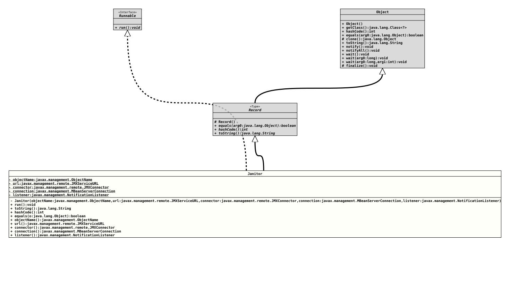

Record Class PerfLogRemoteImpl.Janitor
java.lang.Object
java.lang.Record
org.tquadrat.foundation.perflog.remote.internal.PerfLogRemoteImpl.Janitor
- Record Components:
objectName- The object name that is used to connect to the Performance Logging MBean.url- The service URL for the connection to the MBean server.connector- The JMX connector.connection- The connection to the performance logging MBean.listener- The notification listener that receives the performance messages.
- All Implemented Interfaces:
Runnable
- Enclosing class:
PerfLogRemoteImpl
@ClassVersion(sourceVersion="$Id: PerfLogRemoteImpl.java 1229 2026-05-04 19:11:41Z tquadrat $")
@API(status=INTERNAL,
since="0.25.0")
private static record PerfLogRemoteImpl.Janitor(ObjectName objectName, JMXServiceURL url, JMXConnector connector, MBeanServerConnection connection, NotificationListener listener)
extends Record
implements Runnable
The janitor that takes care of the housekeeping for an
instance of
PerfLogRemote
in case that was not properly closed.
- Author:
- Thomas Thrien (thomas.thrien@tquadrat.org)
- Version:
- $Id: PerfLogRemoteImpl.java 1229 2026-05-04 19:11:41Z tquadrat $
- Since:
- 0.25.0
- UML Diagram
-

UML Diagram for "org.tquadrat.foundation.perflog.remote.internal.PerfLogRemoteImpl.Janitor"
{kind=link}
-
Field Summary
FieldsModifier and TypeFieldDescriptionprivate final MBeanServerConnectionThe field for theconnectionrecord component.private final JMXConnectorThe field for theconnectorrecord component.private final NotificationListenerThe field for thelistenerrecord component.private final ObjectNameThe field for theobjectNamerecord component.private final JMXServiceURLThe field for theurlrecord component. -
Constructor Summary
ConstructorsModifierConstructorDescriptionprivateJanitor(ObjectName objectName, JMXServiceURL url, JMXConnector connector, MBeanServerConnection connection, NotificationListener listener) Creates an instance of aJanitorrecord class. -
Method Summary
Modifier and TypeMethodDescriptionReturns the value of theconnectionrecord component.Returns the value of theconnectorrecord component.final booleanIndicates whether some other object is "equal to" this one.final inthashCode()Returns a hash code value for this object.listener()Returns the value of thelistenerrecord component.Returns the value of theobjectNamerecord component.final voidrun()final StringtoString()Returns a string representation of this record class.url()Returns the value of theurlrecord component.
-
Field Details
-
objectName
The field for theobjectNamerecord component. -
url
The field for theurlrecord component. -
connector
The field for theconnectorrecord component. -
connection
The field for theconnectionrecord component. -
listener
The field for thelistenerrecord component.
-
-
Constructor Details
-
Janitor
private Janitor(ObjectName objectName, JMXServiceURL url, JMXConnector connector, MBeanServerConnection connection, NotificationListener listener) Creates an instance of aJanitorrecord class.- Parameters:
objectName- the value for theobjectNamerecord componenturl- the value for theurlrecord componentconnector- the value for theconnectorrecord componentconnection- the value for theconnectionrecord componentlistener- the value for thelistenerrecord component
-
-
Method Details
-
run
-
toString
-
hashCode
-
equals
Indicates whether some other object is "equal to" this one. The objects are equal if the other object is of the same class and if all the record components are equal. All components in this record class are compared withObjects::equals(Object,Object). -
objectName
Returns the value of theobjectNamerecord component.- Returns:
- the value of the
objectNamerecord component
-
url
-
connector
-
connection
Returns the value of theconnectionrecord component.- Returns:
- the value of the
connectionrecord component
-
listener
-